Pokój dwuosobowy z widokiem
Przestronny pokój z łóżkiem małżeńskim i dodatkowym łóżkiem pojedynczym, oknem z widokiem na las i Skałę Ciemną.
- Łóżko 160 cm + łóżko pojedyncze
- Pościel i ręczniki w cenie
- Ogrzewanie, szafa, stolik
- Widok na skały
Cisza, las i jurajskie skały tuż za oknem
Niewielki, zadbany dom u stóp Skały Ciemnej — w samym sercu Doliny Będkowskiej.
Oferujemy komfortowe pokoje i cały domek na wynajem dla osób, które chcą odpocząć z dala od miejskiego zgiełku. Z okien naszych pokoi widać jurajskie wapienne skały i otaczający je bukowy las. To noclegi blisko Krakowa (ok. 30 minut autem), ale tutaj czas płynie zupełnie inaczej — bez tłumów, bez hałasu, czasem nawet bez zasięgu.
Szukasz domku w lesie na weekend, spokojnego wypoczynku na Jurze Krakowsko‑Częstochowskiej lub bazy wypadowej do Ojcowa i Doliny Będkowskiej? To idealne miejsce dla rodzin, par, wspinaczy i każdego, kto szuka prawdziwej ciszy przy odrobinie komfortu.
Do dyspozycji Gości przygotowaliśmy jasne, spokojne pokoje oraz cały domek z osobnym wejściem. Wszystkie pomieszczenia są ogrzewane, czyste i świeżo odnowione.
Przestronny pokój z łóżkiem małżeńskim i dodatkowym łóżkiem pojedynczym, oknem z widokiem na las i Skałę Ciemną.
Większy pokój dla rodziny lub grupy przyjaciół — dwa łóżka + dodatkowa wersalka, miejsce na bagaże i kącik do odpoczynku.
Samodzielny domek z salonem, sypialnią, łazienką i tarasem. Idealny na dłuższy pobyt lub spokojny weekend w gronie najbliższych.
Ceny ustalamy indywidualnie w zależności od terminu i długości pobytu — zapraszamy do kontaktu.
Zobacz, jak wygląda u nas na miejscu.
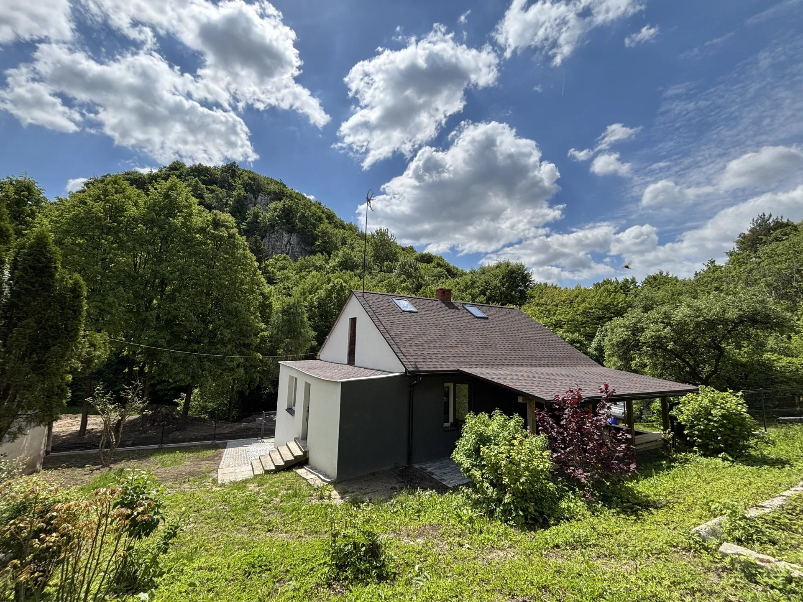
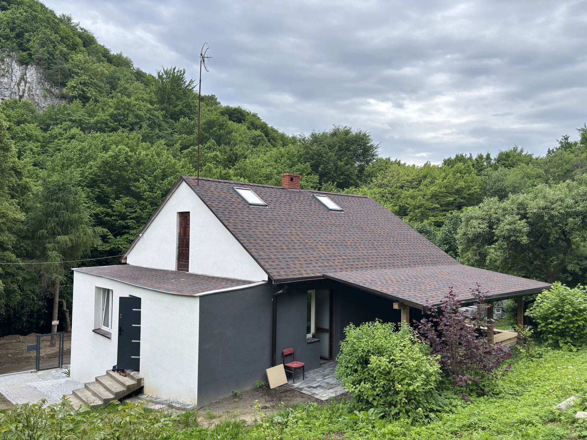

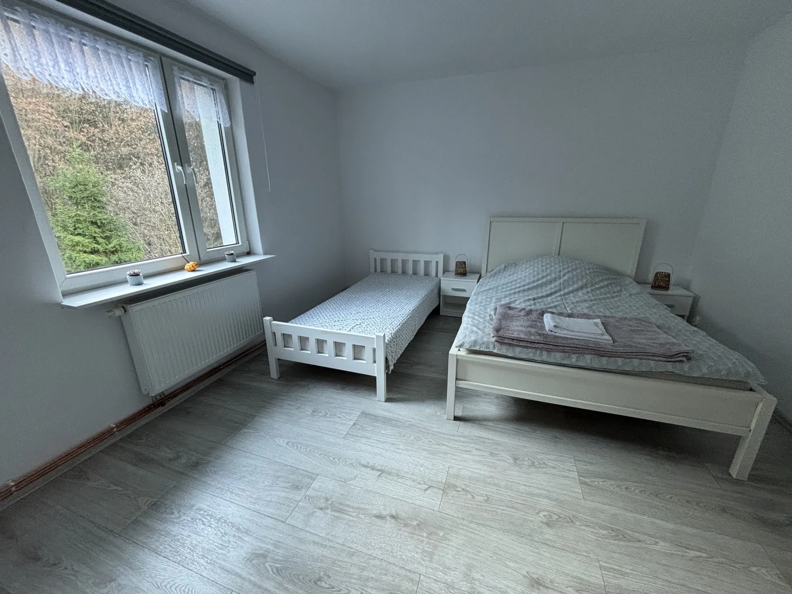
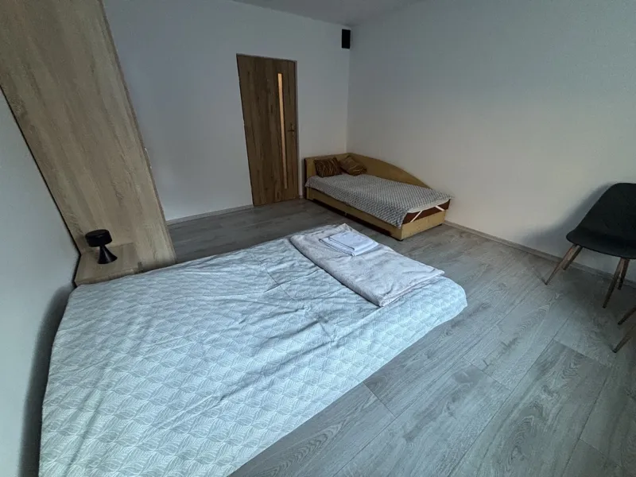
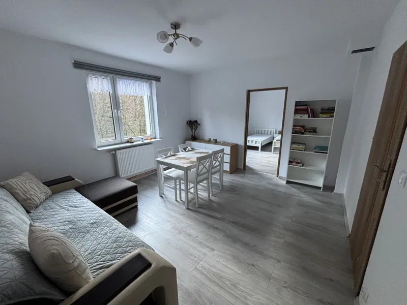
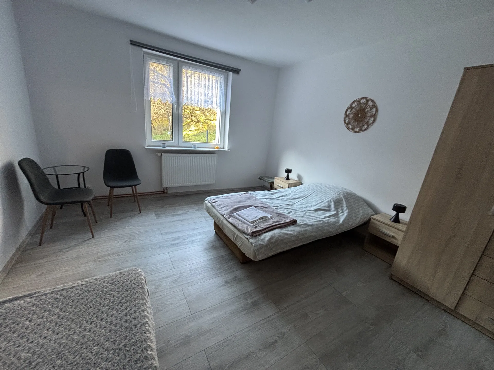
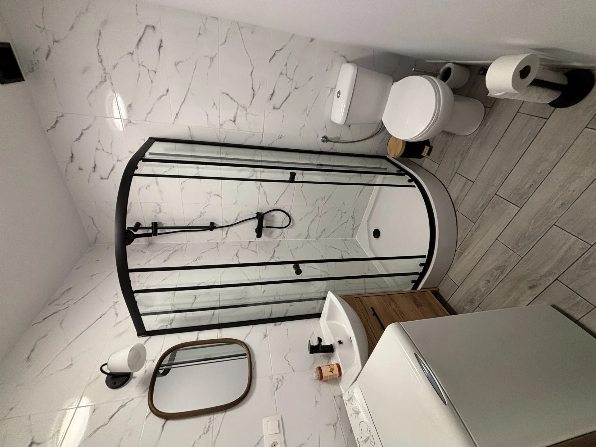
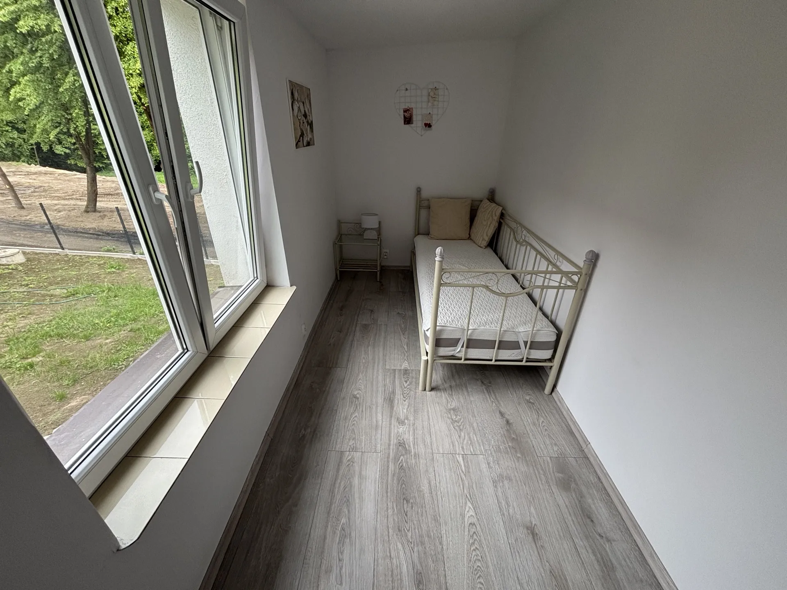
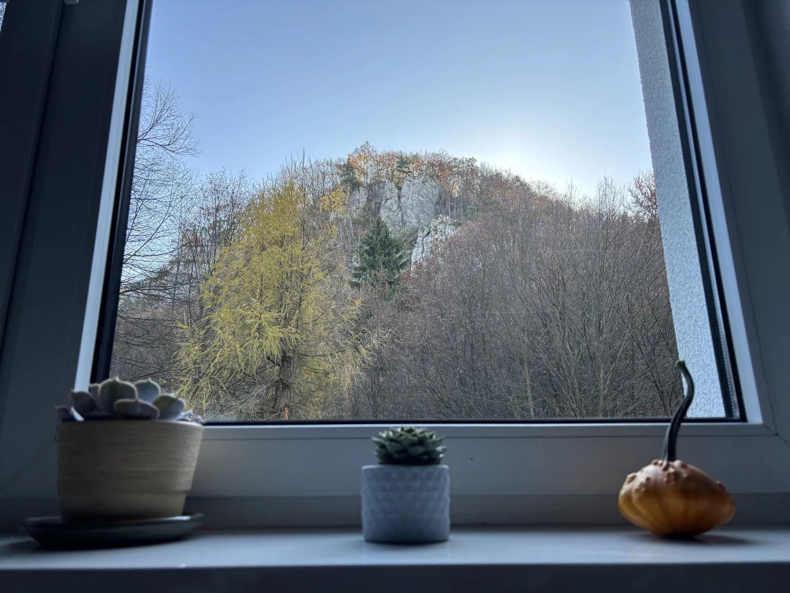
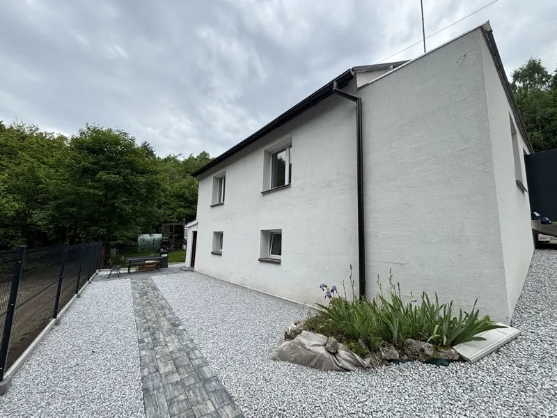
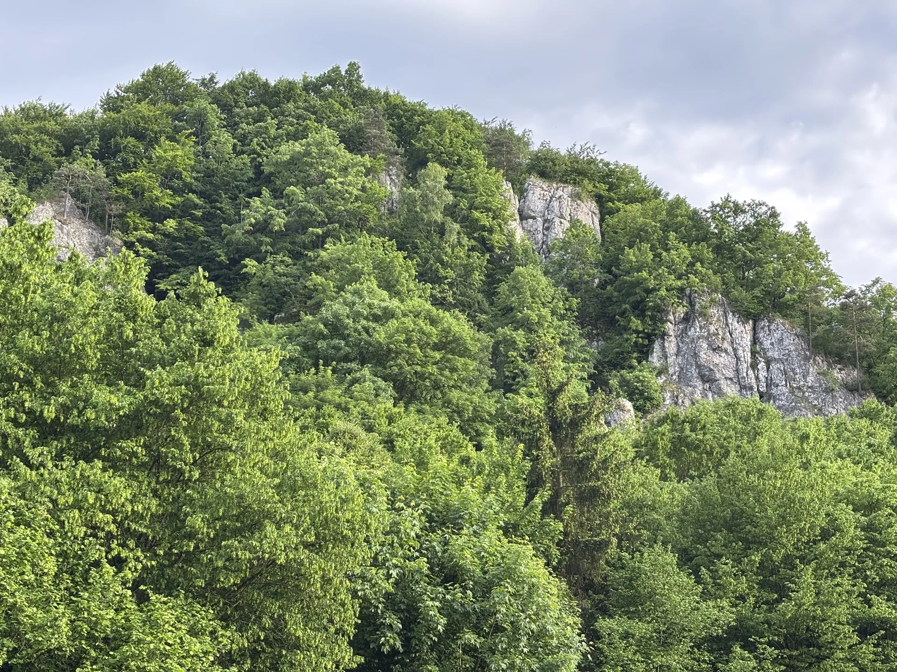
Dolina Będkowska to jedna z najpiękniejszych dolin Jury Krakowsko‑Częstochowskiej. Masz u nas wszystko pod ręką:
Sokole Skały, Brandysowa, Sokolica — raj dla wspinaczy i spacerowiczów z aparatem.
Kilkanaście kilometrów oznakowanych szlaków startujących dosłownie od naszej furtki.
Najwyższy naturalny wodospad Wyżyny Krakowsko‑Częstochowskiej — około 30 minut spacerem.
Kraków ok. 25 km, Ojców i zamek w Pieskowej Skale w zasięgu krótkiej wycieczki autem.
Nasze kwatery leżą w samym sercu Doliny Będkowskiej, w otoczeniu Jury Krakowsko‑Częstochowskiej. Droga jest prosta — a ostatni odcinek przez las to już początek wypoczynku.
Jedź drogą krajową DK94 na północny zachód. Za Zabierzowem skręć w kierunku Jerzmanowic (droga 773).
Z Jerzmanowic kieruj się na wschód do miejscowości Łazy, w stronę Doliny Będkowskiej. Szukaj numeru 133.
Dom stoi u podnóża Skały Ciemnej. Parking na posesji. W razie problemów — zadzwoń, naprowadzmy!
Rezerwujemy wyłącznie telefonicznie lub mailowo — zadzwoń pod numer 509 594 131 lub napisz na kwaterypodciemna@gmail.com. Nie korzystamy z Booking.com ani innych portali.
Przy dłuższych pobytach i rezerwacjach w sezonie prosimy o symboliczną zaliczkę na poczet rezerwacji — szczegóły ustalamy indywidualnie podczas rozmowy telefonicznej.
Doba pobytowa zaczyna się od godziny 15:00, a kończy o 11:00 następnego dnia. Godziny są elastyczne — jeśli potrzebujesz innej pory, po prostu daj nam znać.
Tak, kochamy zwierzęta. Prosimy tylko o wcześniejszą informację podczas rezerwacji, żebyśmy wiedzieli, że pojawi się u nas czworonóg.
Tak, na terenie posesji przygotowaliśmy miejsca parkingowe dla Gości — za darmo i w pełni bezpiecznie.
WiFi jest dostępne w głównym domu. Zasięg GSM bywa słaby — to część uroku tego miejsca. Jeśli szukasz prawdziwego odpoczynku od telefonu, trafiłeś w idealne miejsce.
Świeża pościel, ręczniki, parking, ogrzewanie, media i dostęp do wspólnej kuchni. Opłata klimatyczna — zgodnie z obowiązującą stawką gminy.
W domu i domku obowiązuje zakaz palenia. Na zewnątrz, na tarasie i w ogrodzie — oczywiście można.
Zadzwoń lub napisz — odpowiemy najszybciej jak się da i doradzimy, który pokój będzie dla Ciebie najlepszy.